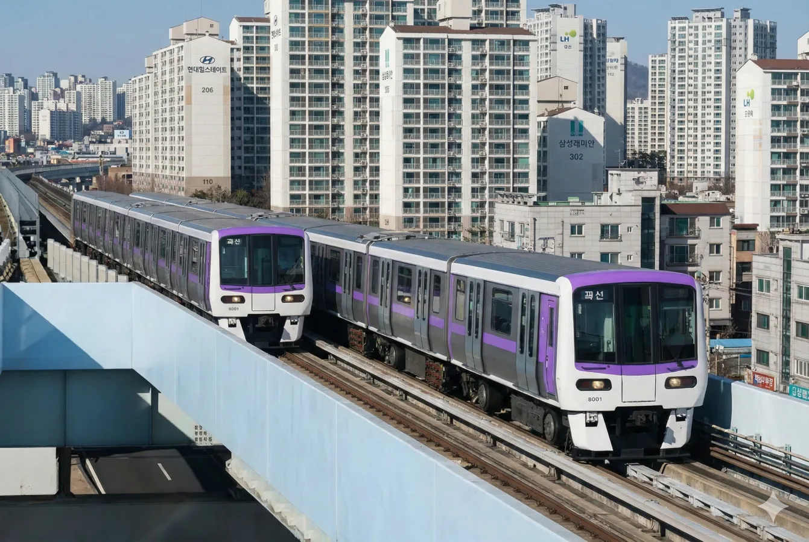
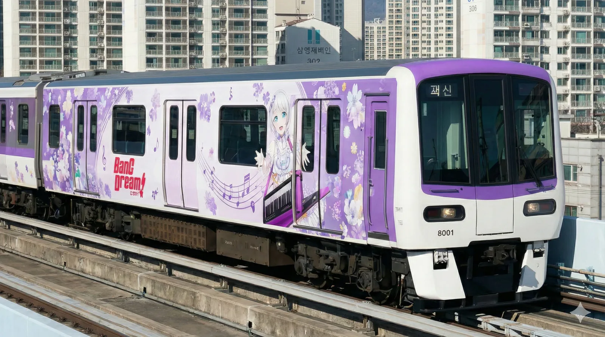
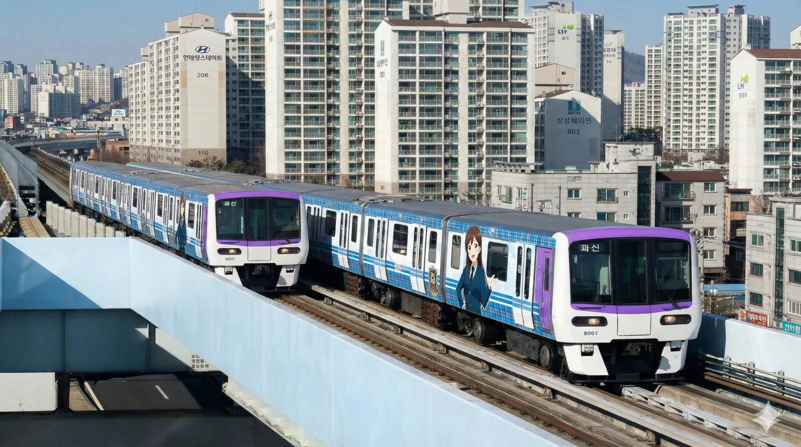
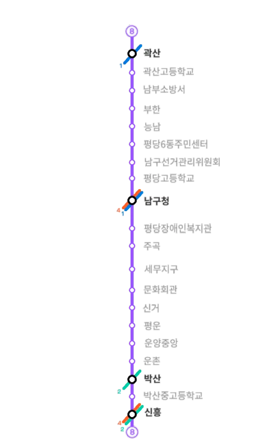

|
|||
|
   촬영지: 곽산고역
8호선 마스코트 유리아 래핑열차  노선도
|
|||
| 노선 정보 | |||
|---|---|---|---|
| 노선 분류 | 도시철도 | ||
| 차량 분류 | 안내궤조식 철도 (AGT) | ||
| 기점 | 곽산역 | ||
| 종점 | 신흥역 | ||
| 역 수 | 20개 | ||
| 구성 노선 | 효빈 도시철도 8호선 | ||
| 상징색 | 연보라색 (#9856FF) | ||
| 개통일 | 2024년 3월 4일 (1주년) | ||
| 소유자 | 효빈광역시 | ||
| 운영사 | 효빈교통공사 | ||
| 사용 차량 | 효빈교통공사 8000호대 전동차 | ||
| 차량기지 | 곽산차량사업소[1] (1호선과 공용) | ||
| 노선 제원 | |||
| 노선연장 | 15.85km | ||
| 궤간 | 1,435㎜ (표준궤) | ||
| 선로구성 | 복선 | ||
| 급전방식 | 직류 1,500V 가공전차선[2] | ||
| 신호방식 | Kyosan Signal ATC/ATO | ||
| 최고속도 | 55㎞/h | ||
| 표정속도 | 35.2㎞/h | ||
| 통행방향 | 우측통행 | ||
| 개통 연혁 | 2024.3.4 곽산 ↔ 신흥 | ||
효빈 도시철도의 한 노선이자 효빈권 전철의 막내 운행 계통으로, 2024년 3월 4일에 화려하게 개통하였다. 운영기관은 효빈교통공사이며 운행하는 열차는 효빈교통공사 8000호대 전동차(무인운전 4량 1편성), 통행방식은 우측통행이다. 노선색은 ● 연보라색(#9856FF)이며, 색에 담긴 뜻은 도시의 '존엄'이다.
일본의 유리카모메와 흡사한 고무차륜 AGT 경전철 방식을 채택했다. 초기 건설 당시 지옥 같은 출퇴근 교통난에서 탈출하고자 했던 지역 주민들이 자발적으로 분담금을 영혼까지 끌어모아 지은 눈물겨운 역사로 화제가 되었다. 주민들의 "내 돈 냈으니 우리 집 앞에도 역 지어달라"는 열화와 같은 성원 덕분에 15.85km 남짓한 짧은 구간에 무려 20개의 역이 촘촘하게 박혀있는 이색적인 노선이 탄생했다. 그런데도 고무차륜 특유의 미친 가감속 능력 덕분에, 그 촘촘한 역간거리 속에서도 경전철 주제에 표정속도를 35.2km/h까지 끌어올리는 위엄을 토해냈다.
배차간격은 출퇴근(RH) 시에는 4~5분, 평시(NH)에는 6~7분, 첫차 및 막차 시간대에는 10~13분 간격으로 운행되며, 남구 주민들에게는 산소호흡기 같은 존재가 되었다.
기존에 1호선이 지나가긴 하지만 철도 접근성이 묘하게 빈약했던 평당 일부 지역과 곽산 지역에서 신흥역과 남구청역을 십자(+) 형태로 이어주는 콤팩트한 노선이다. 남구 핵심 주거지와 상업지구의 철도 접근성을 극단적으로 끌어올리기 위해 개설되었다.
8호선(평당~남구청~효빈역)은 극심한 교통 체증에 시달리는 평당신도시 주민들의 숙원 사업이자 박효빈 시장의 핵심 인프라 계획이었다. 그런데 국토교통위원회 소속이던 우신면이 갑자기 확정된 고가 철도안을 뒤엎고 "미관을 해치니 전면 지하화하라"며 훼방을 놓기 시작했다. 지하화할 경우 예비타당성 조사부터 다시 받아야 하므로 사실상 사업을 무산시키겠다는 몽니였다.
주민들이 공청회에서 거세게 항의하자, 우신면은 "효빈은 도로망이 잘 뚫려 있는데 버스 타면 되지 않습니까? 차 막히면 일찍 출근하시면 되잖아요. 욕심이 과하시네요"라는 역대급 헛소리를 시전했다. 효빈시는 도로망이 기형적이기로 악명 높고, 평당신도시 역시 간선도로가 턱없이 좁아 1가구 2차량 출퇴근길이 매일 주차장이 되는 생지옥이었다. 이 현실을 전혀 모르는 우신면의 망언에 시민들은 과거 윤대환 시절의 '똥색 버스' 트라우마를 떠올리며 극대노했다.
더 가관인 것은 우신면이 내세운 반대 명분이었다. 그는 국정감사장에서 "고가 철도가 지나가면 쇳소리와 철가루가 날려서 내 펜트하우스 주민들 건강을 위협한다"고 주장했다. 그러나 효빈 8호선은 고무차륜 무인 경전철(K-AGT)이다. 고무 타이어가 콘크리트 궤도를 구르는데 쇳소리가 나고 철가루가 날린다는 기적의 연금술을 설파한 것이다.[3] 이 무식함이 들통나자 전국적인 조롱이 쏟아졌다.
우신면의 폭주에 이웃 지역구(남구 을)의 고정민 의원이 직격탄을 날렸다. 우신면이 "남구 을 의원이 왜 남구 갑 사업에 간섭하냐! 명백한 월권행위!"라며 핏대를 세우자, 다음 날 고정민은 기자회견장에 8호선 노선도 대형 패널을 들고 등판해 "지도 좀 보십시오. 8호선은 어간동, 월천동, 평당1동 등 제 지역구(남구 을)를 정통으로 관통합니다만?"이라고 팩트 폭격을 꽂아버렸다.
자신이 결사반대하는 노선이 옆 동네로 이어지는지조차 몰랐던 우신면은 "저건 좌파들이 조작한 가짜 지도다!"라고 발악하다 빡통임이 전국에 생중계되었다. 이 사건을 명분으로 고정민은 "내 고향 평당동을 지키겠다"며 남구 갑 자객 출마를 선언했고, 제22대 총선에서 75.96%라는 경이로운 득표율로 우신면(20.50%)을 완벽하게 짓밟고 정계에서 영구 퇴출시켜버렸다.
2024년 12월 3일 심야, 윤석열 대통령이 헌정 초유의 비상계엄을 선포한 내란 사태. 놀랍게도 이 끔찍한 국가 테러의 핵심 명분 중 하나가 바로 '효빈 8호선 북한 EMP 기지설'이었다.[5]
총선에서 5.2%라는 역사적 참패를 당한 윤재훈과, 8호선 백지화에 실패하고 쫓겨난 우신면이 용산 대통령실에 찾아가 "8호선 고가 다리는 전철이 아니라, 박효빈 시장이 북한의 지령을 받고 투표지 분류기를 교란하려고 세운 거대한 대남 전자파(EMP) 송신 안테나입니다! 그래서 우리 표가 증발한 겁니다!"라는 미친 소설을 썼고, 인지부조화에 빠진 윤석열이 이를 진지하게 믿어버린 것이다.
계엄 선포 직후 계엄군 장갑차가 효빈시청과 8호선 차량기지로 밀고 들어왔고, 군인들이 "김정은 직통 전화기를 찾는다"며 멀쩡한 8호선 전동차 의자를 뜯어내는 환장할 코미디가 연출되었다. 다행히 박효빈 시장과 시민들의 결사항전으로 계엄은 단 하루 만에 무산되었고, 윤석열은 탄핵소추안 가결 후 잠옷 차림으로 끌려 나가는 비참한 최후를 맞았다. 8호선은 이 황당무계한 촌극 덕분에(?) 세계적인 유명세를 타게 되었다.
정확한 안내방송 문장과 표현을 원한다면 차내 안내방송은 안내방송/열차/도시철도를, 역내 안내방송은 안내방송/역을 참고하기 바랍니다.
| 구분 | 상행 | 하행 | 종착 | 환승 | 출발 | ||
|---|---|---|---|---|---|---|---|
| 완행 | 급행 | 완행 | 급행 | ||||
| 1~8호선 일반 | 파도내음 | 휘황곡[1] | 물길소리 | 소라의눈물[1] | 잔잔바다 | 뱃사공 삼중주 | 효빈교통공사 로고송 |
| 이벤트 한정 | HAF(효빈 애니메이션 페스티벌) 기간 한정 사용 (매년 BGM 변경) | ||||||
| 언어 | 일반 및 환승 안내방송 | 종착 안내방송 |
|---|---|---|
| 한국어 | "이번 역은 [역명], [역명]역입니다. 내리실 문은 [방향]입니다. [환승노선]으로 갈아타실 고객께서는 이번 역에서 내리시기 바랍니다." | "이번 역은 이 열차의 마지막 역인 [종착역], [종착역]역입니다. 내리실 문은 [방향]입니다. 오늘도 효빈교통공사 열차를 이용해 주셔서 고맙습니다. 안녕히 가십시오." |
| 영어 | "This stop is [역명], [역명]. The doors are on your [방향]. You can transfer to the [환승노선]." | "This stop is [종착역], [종착역]. The last station. The doors are on your [방향]. Thank you for traveling with HyobinMetro." |
| 중국어 | "前方到站是 [역명] 站。 需要换乘 [환승노선] 的乘客，请在本站下车。" | - |
| 일본어 | "次は、[역명]、[역명]駅です. [환승노선] はお乗り換えです。" | - |
아직까지는 노선 길이가 짧아 적자인 노선이지만, 개통 1년이 지난 시점에서 4호선, 2호선 본선과 연계되어 오히려 이들 거대 노선의 수익성이 동반 개선되는 강력한 네트워크 순기능이 입증되었다. 평당신도시의 내부 핏줄 역할을 완벽하게 수행하며 타 노선과도 십자(+)로 접속하게끔 연장 계획도 수립 중인 점으로 인해 미래 성장 가능성이 매우 밝은 노선이다.
노선의 모든 역이 효빈광역시 남구 단일 행정구역 내에 소재하고 있다.
청엽구 방면이나 중구 방면으로 선로를 연장하려는 논의가 활발히 진행 중이나, 아직 지어진 지 1년밖에 되지 않은 신생 노선이기에 시 재정 상황을 고려하여 조금 더 지켜봐야 할 듯하다.
현재 노선 자체의 독립된 차량기지가 없는 상황으로, 1호선의 곽산차량기지 부지 일부를 개량하여 셋방살이를 하고 있다. 그러나 중전철과 경전철이 뒤섞여 정비하는 데 여러 제약과 불편함이 따르기 때문에, 현재 효빈공단 유휴 부지 쪽으로 8호선 전용 차량기지를 작게나마 독립 마련할 계획을 수립 중이다.
| 번호 | 영업거리 | 역명 | 환승노선 |
|---|---|---|---|
| 801 | 0.00 | 곽산 | |
| 802 | 1.30 | 곽산고등학교 | - |
| 803 | 2.50 | 남부소방서 | - |
| 804 | 3.26 | 부한 | - |
| 805 | 3.96 | 능남 | - |
| 806 | 5.06 | 평당6동주민센터 | - |
| 807 | 5.90 | 남구선거관리위원회 | - |
| 808 | 6.92 | 평당고등학교(효빈과학대) | - |
| 809 | 7.78 | 남구청 | |
| 810 | 8.68 | 평당장애인복지관 | - |
| 811 | 9.65 | 주곡 | - |
| 812 | 10.37 | 세무지구 | - |
| 813 | 11.36 | 문화회관 | - |
| 814 | 11.91 | 신거 | |
| 815 | 12.41 | 평운 | - |
| 816 | 13.20 | 운양중앙 | - |
| 817 | 13.80 | 운촌 | - |
| 818 | 14.40 | 박산 | |
| 819 | 15.02 | 박산중고등학교 | - |
| 820 | 15.85 | 신흥 |
효빈 도시철도 8호선은 총 5개의 환승역을 보유하고 있으며, 특히 남구청역과 신흥역은 무려 3개 노선이 십자로 만나는 남구 교통의 절대적 요지이다.
| 역명 | 환승 노선 | 특징 및 환승 난이도 |
|---|---|---|
| 곽산 | ● 1호선 | 기점역. 1호선 곽산차량기지 인입선 구조 문제로 환승 통로가 다소 길다. (도보 약 4분 소요) |
| 남구청 | ● 1호선 ● 4호선 |
남구 교통의 핵심 심장부. 층고를 맞춘 개념환승 구조를 갖춰 8호선 승강장에서 에스컬레이터 한 번으로 이동 가능하다. 출퇴근 시간 혼잡도 부동의 1위. |
| 신거 | ● 1호선 | 주거 밀집 구역. 1호선 구 역사와 8호선 신 역사가 무빙워크가 설치된 긴 지하 통로로 연결되어 있다. |
| 박산 | ● 2호선 | 2호선 지선 구간과 환승된다. 학교가 몰려 있어 통학 수요가 많아 등하교 시간대에 헬게이트가 열린다. |
| 신흥 | ● 2호선 ● 4호선 |
종점역. 2호선 및 4호선의 주요 환승 허브이자 거대 상업 중심지. 3개 노선이 지하에서 십자(+) 및 L자로 교차하는 거대한 언더그라운드 광장이 특징이다. |
노선 연장이 짧고 전 구간 단일 계통으로 군더더기 없이 운행되므로 행선지는 매우 단순하다. 평일 출퇴근(RH) 시간대에는 3분 50초~4분 간격, 평시(NH)에는 6분 간격으로 빗자루질을 한다.
열차 번호는 4자리(8XXX)를 사용하며, 8호선을 의미하는 '8'로 시작한다.
| 운행 요일 | 열차 번호 | 방향 |
|---|---|---|
| 평일 | 8001 ~ 83XX | 하행 (신흥 방면, 홀수) |
| 8002 ~ 83XX | 상행 (곽산 방면, 짝수) | |
| 주말/공휴일 | 8501 ~ 87XX | 하행 (신흥 방면, 홀수) |
| 8502 ~ 87XX | 상행 (곽산 방면, 짝수) |
2024년 8호선 개통과 함께 화려하게 데뷔한 고무차륜 AGT(K-AGT 기반) 전동차이다. 무인 운전(GoA4) 시스템을 기본 탑재하고 있으며, 남구 주민들의 강력한 의견을 수렴하여 전면부 개방감이 탁월한 와이드 통유리 디자인을 채택했다. 총 26개 편성(104량)이 재적 중이다.
2025년 기준 효빈 8호선의 일평균 승하차 순위이다. 개통 1년 차 신규 노선임에도 폭발적인 이용률을 보이고 있다. 환승역의 경우 타 노선 환승객을 뺀 8호선 단독 게이트 통과 수치다.
| 효빈 도시철도 8호선 노선 총합 | ||||||
|---|---|---|---|---|---|---|
| 역당 일평균 | 일평균 승하차 | 2025년 총합 | 최다 이용 | 최저 이용 | ||
| 5,402명 | 108,054명 | 39,439,710명 | 남구청 | 부한 | ||
| 일일 이용객 수 구간별 분포 | ||||||
|---|---|---|---|---|---|---|
| 2만명 이상 | 1만~2만 | 5천~1만 | 2천~5천 | 2천 이하 | ||
| 없음 | 2개역 | 5개역 | 12개역 | 1개역 | ||
| 순위 | 역명 | 일평균 | 2025년 총합 | 순위 | 역명 | 일평균 | 2025년 총합 |
|---|---|---|---|---|---|---|---|
| 1 | 남구청 | 14,213 | 5,187,745 | 11 | 주곡 | 4,354 | 1,589,210 |
| 2 | 신흥 | 11,481 | 4,190,565 | 12 | 박산중고등학교 | 4,282 | 1,562,930 |
| 3 | 박산 | 9,321 | 3,402,165 | 13 | 문화회관 | 4,243 | 1,548,695 |
| 4 | 곽산 | 9,062 | 3,307,630 | 14 | 평당6동주민센터 | 3,971 | 1,449,415 |
| 5 | 신거 | 7,794 | 2,844,810 | 15 | 남구선거관리위원회 | 3,316 | 1,210,340 |
| 6 | 운양중앙 | 7,312 | 2,668,880 | 16 | 평운 | 2,388 | 871,620 |
| 7 | 운촌 | 5,142 | 1,876,830 | 17 | 평당장애인복지관 | 2,275 | 830,375 |
| 8 | 남부소방서 | 4,619 | 1,685,935 | 18 | 곽산고등학교 | 2,215 | 808,475 |
| 9 | 세무지구 | 4,524 | 1,651,260 | 19 | 능남 | 1,920 | 700,800 |
| 10 | 평당고등학교 | 4,401 | 1,606,365 | 20 | 부한 | 1,221 | 445,665 |
효빈광역시에서 가장 최근에 개통한 막내 노선으로, 역간 거리가 짧고 이용객이 남구 평당동 안쪽에만 집중되어 있어 전체 이용객 수는 하위권이다. 하지만 대구 3호선보다는 이용객이 많다고 한다. 용케도 이겼다
8호선의 상징인 마스코트 유리아(Yuria)는 개통 3년 전인 2021년에 애니메이션 <달려라! 레일루미네> 1기를 통해 선행 데뷔하며 폭발적인 인기를 끌고 있었다. 그러나 2022년, 우신면 의원이 자신의 조망권을 위해 8호선 고가 철도를 백지화하려 들자 애니메이션 팬덤이 발칵 뒤집혔다. 노선이 없어지면 2D 캐릭터인 유리아마저 일자리를 잃고 폐기될 운명이었기 때문이다.
이에 극대노한 오타쿠들은 '유리아가 몽키스패너로 우신면의 선거 현수막을 부수는 합성 밈'을 만들어 무차별 살포했다. 이 밈을 고정민 의원의 장남이 프로필 사진으로 썼는데, 하필 그 장남을 학교폭력으로 괴롭히던 가해자가 우신면의 아들이었다. 가해자 아들의 고자질을 들은 우신면은 분노조절장애가 와서, 경찰서로 달려가 무려 2D 애니메이션 캐릭터인 '유리아(17세, 효빈기계공고)' 본인을 명예훼손 피의자로 고소장에 올리는 전무후무한 촌극을 벌였다.[4] 당연히 경찰서에서 쫓겨났고, 이 사실이 폭로되며 우신면 아들의 학폭 가해 사실까지 만천하에 드러났다.
이 '몽키스패너 밈'은 맘카페 '평당맘'에 흘러 들어가면서 기적의 화학작용을 일으켰다. 8호선 백지화에 분노한 맘카페 학부모들과 유리아를 지키려는 오타쿠들이 "우신면을 뜯어버리자"며 '평당맘-오타쿠 십자군 동맹'을 맺은 것이다. 이 거대한 분노를 간파한 고정민 의원이 자객으로 등판해 "유리아가 달릴 궤도를 사수하겠다"고 포효하며 남구 갑 유권자들을 싹쓸이했고, 결국 우신면은 펜트하우스 집값 15% 폭락이라는 철퇴를 맞고 야반도주하듯 단양으로 쫓겨났다.
효빈교통공사가 만든 효빈메트로 마스코트 캐릭터 유리아. 우신면의 트롤링을 막아낸 평당의 잔다르크이자, 8호선을 넘어 효빈시 서브컬처 팬덤의 상징적인 존재가 되었다. 프로필은 다음과 같다.